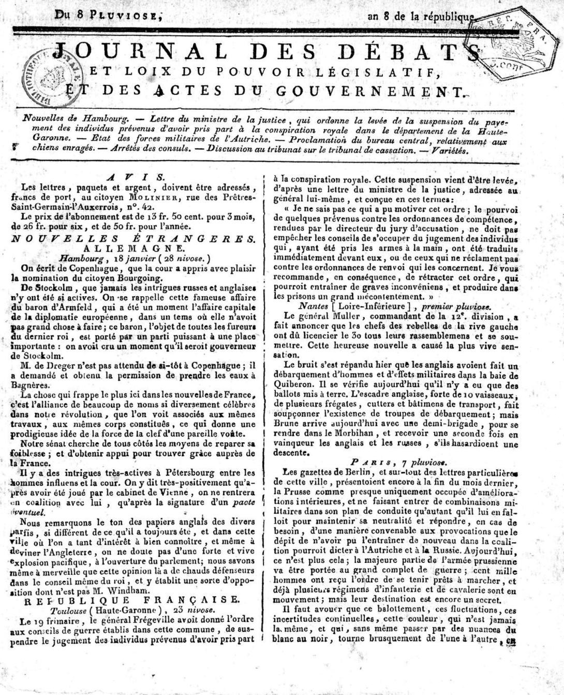

01Бизнесмен поневоле
Бальзак родился в 1799 году в городе Тур. В середине 1820-х годов он пробует себя в предпринимательстве: приобретает типографию, затем словолитню. Дело не принесло дохода и закончилось долгами, которые писатель выплачивал всю жизнь. Опыт оказался полезным: Бальзак знал, сколько стоят бумага, набор и тираж, и понимал, что книга есть товар. Эту логику он перенёс в романы, где постоянно называет суммы и цены.
02Газетчик Июльской монархии
С конца 1820-х годов Бальзак печатается в малых газетах и журналах: La Silhouette, La Caricature (журнал Шарля Филипона), La Mode, Le Feuilleton des journaux politiques. Он пишет очерки нравов, фельетоны, политические заметки, "физиологии" и памфлеты. Многие тексты появлялись анонимно или под псевдонимами, что было обычным для эпохи.
Сатирический и фельетонный опыт повлиял на художественную прозу. Книга "Физиология брака" (1829) собрана из афористических фрагментов, напоминающих журнальные заметки. Структура коротких наблюдений, зарисовок и типов осталась в "Человеческой комедии".
03Редактор и издатель
В 1835 – 1836 годах Бальзак владел и редактировал Chronique de Paris, в которой пытался соединить политику, критику и литературу. Издание не нашло достаточной аудитории и вскоре прекратилось. Попытка повторилась в 1840 году: Бальзак основал Revue parisienne, которую писал почти один. Вышло всего три номера, один из них содержал известную рецензию Стендаля на "Пармскую обитель".
Эти неудачи не были случайными. Для периодического издания требовались деньги, стабильная реклама и подписка, а Бальзак рассчитывал на силу собственного имени. Его опыт показал, что литературный авторитет не заменяет издательского предприятия.
04Роман с продолжением и право автора
В 1836 году Эмиль де Жирарден основал La Presse, газету с дешёвой подпиской, которая окупалась рекламой. В октябре 1836 года там вышла "Старая дева" Бальзака, и этот роман обычно называют одним из первых романом с продолжением во французской ежедневной газете. Жанр оказался выгоден газете: читатель покупал номер ради продолжения.
Бальзак был среди инициаторов Общества литераторов (Société des gens de lettres), основанного в 1838 году для защиты прав авторов, и выступал против бесплатной перепечатки текстов в газетах. В 1834 году он выпустил "Письмо к французским писателям XIX века", где требовал юридически закрепить литературную собственность. Для него независимость писателя была связана с деньгами.
05Пресса как предмет литературы
Прессу Бальзак описал в романе "Утраченные иллюзии" (1837 – 1843). Герой Люсьен де Рюбампре приезжает в Париж, становится литератором и журналистом, обнаруживает, что критика зависит от интересов издателей, а положительную рецензию можно купить. Книга содержит и обобщение: газеты показаны как торговая сила, определяющая репутации и карьеры.
В 1843 году Бальзак опубликовал "Монографию о парижской прессе", где разделил журналистов на типы и описал нравы редакций. Подход напоминает "физиологии" 1830-х годов, но с аналитической задачей: показать, что газета есть институт, а не набор отдельных голосов.
06Что в Монографии о парижской прессе
Небольшая книга 1843 года построена как классификация журналистов и газет по аналогии с естественной историей. Бальзак описывает различные типы авторов: от главного редактора до подёнщика, пишущего за копейки, и показывает, как в газете распределяются роли. Он рассматривает редакцию как мастерскую, где идеи превращаются в товар, а рецензия может стать услугой издателю или театру.
Главная мысль состоит в том, что периодическая печать создаёт общественное мнение, но одновременно зависит от денег и политических групп. Эта тема продолжает линию "Утраченных иллюзий", где Люсьен проходит путь от наивного поэта до циничного журналиста и в итоге теряет и репутацию, и иллюзии.

07Бальзак и фельетон: тексты, которые читатель покупал
Для газетного читателя 1830-х годов Бальзак был автором не только романов, но и серийных зарисовок парижской жизни. Фельетонная форма требовала сжатых глав, интриги в конце каждого отрывка и повторяющихся героев. Эти требования отразились на "Человеческой комедии": сквозные персонажи (Растиньяк, Вотрен, Нусинген) переходят из романа в роман так же, как герои серийной газетной прозы.
Критики 1830 – 1840-х годов упрекали Бальзака в коммерциализации литературы. Сам он отвечал, что писатель, живущий на гонорар, вправе защищать свой труд. Спор о связи искусства и рынка стал одной из постоянных тем французской литературной критики.
Бальзак описывал прессу жёстко, потому что знал её близко. Его романы и публицистика помогают увидеть за именем автора издательские расходы, ежедневную работу редакции и борьбу за право определять литературную репутацию.
Источники и материалы для чтения
- BnF. Revue parisienne под руководством Бальзака ↗
- Paris Musées. Издания и материалы из коллекции Дома Бальзака ↗
- Gallica. Цифровой архив Revue parisienne ↗
Книги и научная литература
- Balzac H. de. Illusions perdues. Paris, 1837 – 1843.
- Balzac H. de. Monographie de la presse parisienne. Paris, 1843.
- Thérenty M.-È. La littérature au quotidien: poétiques journalistiques au XIXe siècle. Paris: Seuil, 2007.
- Maurois A. Prométhée ou la vie de Balzac. Paris: Hachette, 1965.
- Реизов Б. Г. Бальзак. Л.: Худож. лит., 1960.